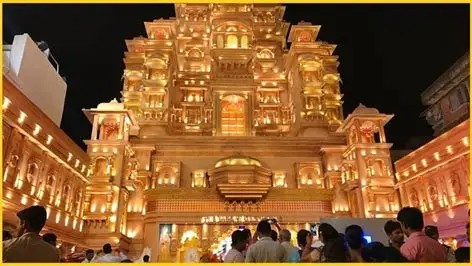
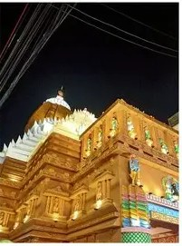
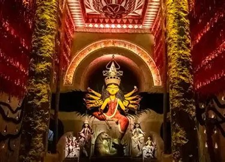
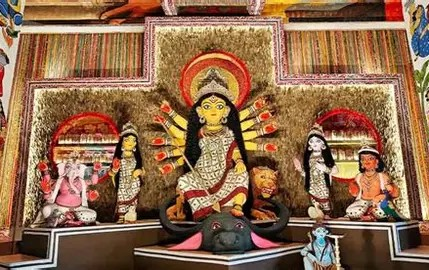
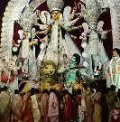

Eighteen pandals worth the queue, from the century-old Bagbazar puja on the Hooghly to the art installations of the south. Tap any pandal or map pin for its location, how to get there, and what to look for once you're inside.





The big southern pandals are calmest between 2 am and 6 am, and on Chaturthi or Panchami before the official start. Saptami and Ashtami evenings are the most crowded.
Kolkata Metro usually runs extended hours through the puja nights. Shobhabazar Sutanuti, MG Road, Kalighat and Netaji are the stops nearest most pandals here.
North (Bagbazar, Kumartuli, Ahiritola, Shobhabazar) and Gariahat (Ekdalia, Singhi Park) are walkable clusters. Plan one cluster per evening.
Sindoor khela on Bijoya Dashami at the North Kolkata bari and baroari pujas is the festival's emotional close. Bring clothes you don't mind turning red.